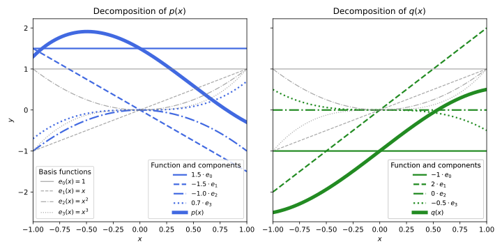

Appendix C • Examples
C.1 Example of Vector Spaces (§§2.2–2.3)
Consider the \(\mathbb{R}\)-vector space \(\left( P_N, \oplus, \odot \right)\) equipped with the field of real numbers \((\mathbb{R}, +, \cdot)\), where: \[ P_N := \left\{ \begin{aligned} p : \mathbb{R} &\to \mathbb{R}\\ x &\mapsto p(x) := p^0 + p^1 x + \cdots + p^N x^N,\; p^i \in \mathbb{R}, \, N \in \mathbb{N} \end{aligned} \right\}, \] \[ \begin{aligned} &\begin{array}{c} \textbf{Pointwise addition } \oplus: \\[6pt] \begin{aligned} \oplus : P_N \times P_N &\to P_N \\ (p, q) &\mapsto p \oplus q \end{aligned} \\[6pt] \text{with } (p \oplus q)(x) := p(x) + q(x). \end{array} \quad &\begin{array}{c} \textbf{Pointwise s-multiplication } \odot: \\[6pt] \begin{aligned} \odot_H : \mathbb{R} \times P_N &\to P_N \\ (\alpha, p) &\mapsto \alpha \odot p \end{aligned} \\[6pt] \text{with } (\alpha \odot p)(x) := \alpha \cdot p(x). \end{array} \end{aligned} \]
C.1.1 Check for Vector Space Properties (§2.2)
We can verify that \( \left( P_N, \oplus, \odot \right) \) is a vector space over \( \mathbb{R}, +, \cdot \) by checking the required axioms:
Commutativity (for \(\oplus\)): \[ \forall p, q \in P_N \longrightarrow (p \oplus q)(x) = p(x) + q(x) = q(x) + p(x) = (q \oplus p)(x), \]
Associativity (for \(\oplus\)): \[ \forall p, q, r \in P_N \longrightarrow ((p \oplus q) \oplus r)(x) = (p(x) + q(x)) + r(x) = p(x) + (q(x) + r(x)) = (p \oplus (q \oplus r))(x). \]
Neutral element (for \(\oplus\)): The zero polynomial \( \mathbf{0} \in P_N \), defined by \( \mathbf{0}(x) := 0 \), satisfies \[ (p \oplus \mathbf{0})(x) = p(x) + 0 = p(x), \quad \forall p \in P_N. \]
Inverse element (for \(\oplus\)): For each \( p \in P_N \), define \( -p \in P_N \) by \( (-p)(x) := -p(x) \). Then, \[ (p \oplus (-p))(x) = p(x) - p(x) = 0 = \mathbf{0}(x). \]
Associativity (for \(\odot\)): \[ \begin{aligned} \forall \alpha, \beta \in \mathbb{R}, \, p \in P_N \longrightarrow \left((\alpha \cdot \beta) \odot p\right)(x) = (\alpha \cdot \beta) \cdot p(x) = \alpha \cdot (\beta \cdot p(x)) = \left(\alpha \odot (\beta \odot p)\right)(x), \end{aligned} \]
Distributivity (of \(+\) over \(\odot\)): For \( \alpha, \beta \in \mathbb{R} \), and \( p \in P_N \), \[ \begin{aligned} \left((\alpha + \beta) \odot p\right)(x) = (\alpha + \beta) \cdot p(x) = \alpha \cdot p(x) + \beta \cdot p(x) = ...\\ ... = (\alpha \odot p)(x) + (\beta \odot p)(x) = \left((\alpha \odot p) \oplus (\beta \odot p)\right)(x), \end{aligned} \]
Distributivity (of \(\odot\) over \(\oplus\)): For \( \alpha \in \mathbb{R} \), and \( p, q \in P_N \), \[ \begin{aligned} \left(\alpha \odot (p \oplus q)\right)(x) = \alpha \cdot (p(x) + q(x)) = \alpha \cdot p(x) + \alpha \cdot q(x) = ...\\ ...= (\alpha \odot p)(x) + (\alpha \odot q)(x) = \left((\alpha \odot p) \oplus (\alpha \odot q)\right)(x), \end{aligned} \]
Unitary element (for \(\odot\)): The one polynomial \( \mathbf{1} \in P_N \), defined by \( \mathbf{1}(x) := 1 \), satisfies \[ (\mathbf{1} \odot p)(x) = 1 \cdot p(x) = p(x). \]

C.1.2 Examples of Objects associated with a Vector Space (§2.2)
We can now provide an example of a linear map. Let’s consider the differential operator: \begin{align*} \delta : P_N &\overset{\sim}{\to} P_N\\ p &\mapsto \delta(p) := p' \end{align*} Where \(\left( P_N, \oplus, \odot \right)\), serves both as the domain and the target vector space for \(\delta\). We can explicitly check that it satisfies the properties for linear maps: \[ \delta \left[ \left(p \oplus q\right)(x) \right] = (p(x) + q(x))' = p'(x) + q'(x) = \delta(p)(x) \oplus \delta(q)(x), \] \[ \delta \left[ \left(\alpha \odot p\right) (x) \right]= (\alpha \cdot p(x) )' = \alpha \cdot p'(x) = \alpha \odot \delta(p)(x). \]
We can also define the vector space of homomorphisms between the vector space \(\left( P_N, \oplus, \odot \right)\), and itself using the definitions from Chapter 2: \( \left( \text{Hom}(P_N, P_N), \oplus_H, \odot_H \right) \). For example: \(5 \odot \delta \oplus (\delta \circ \delta) \in \text{Hom}(P_N, P_N)\).
The dual vector space of \(\left( P_N, \oplus, \odot \right)\) is the homomorphism between our original vector space and the real numbers, i.e, \(\left( P_N^* := \text{Hom}(P_N, \mathbb{R}), \oplus^*, \odot^* \right)\).
The following operator for integration is therefore an element of the dual space, that is, a covector: \begin{align*} I : P_N &\overset{\sim}{\to} \mathbb{R}\\ p &\mapsto I(p) := \int_0^1 p(x) dx\, . \end{align*} And we need to verify if it is indeed linear: \[ I \left[ \left(p \oplus q\right)(x) \right] = I\left[p(x) + q(x)\right] = I\left[p(x)\right] + I\left[q(x)\right], \] \[ I \left[ \left(\alpha \odot p\right) (x) \right]= I\left[\alpha \cdot p(x)\right] = \alpha \cdot I\left[p(x)\right]. \]
Finally, we provide an example of a higher-order tensor: The inner product on the real numbers is a \((0,2)\)-tensor over \( P_N \) defined by the (multi-)linear map: \begin{align*} g : P_N \times P_N &\overset{\sim}{\to} \mathbb{R}\\ (p, q)&\mapsto g(p, q) := \int_{-1}^{1} p(x) q(x) dx \,. \end{align*} Again, let’s verify if it is indeed (multi-)linear: \begin{align*} g\left[\left(p_1 \oplus p_2\right)(x),\; q(x)\right] &= \int_{-1}^{1} \left(p_1(x) + p_2(x)\right) q(x) dx = ...\\ &...= \int_{-1}^{1} p_1(x) q(x) dx + \int_{-1}^{1} p_2(x) q(x) dx = g(p_1, q) + g(p_2, q), \end{align*} \[ g\left[\left(\alpha \odot p\right)(x),\; q(x)\right] = \int_{-1}^{1} \left(\alpha \cdot p(x)\right) q(x) dx = \alpha \cdot \int_{-1}^{1} p(x) q(x) dx = \alpha \cdot g(p, q), \] The same is true for the second entry, confirming it’s (multi-)linear, and therefore a \((0,2)\)-tensor.
C.1.3 Basis, Dual Basis and Coordinate Components (§2.3)
If we now fix the order of our polinomials to a finite number, let’s say \( N = 3 \), we can define the following (Hamel) basis for our vector space: \[ B \coloneq \left\lbrace \hat{x}_i \right\rbrace = \left\lbrace \hat{x}_0(x) = 1, \quad \hat{x}_1(x) = x, \quad \hat{x}_2(x) = x^2, \quad \hat{x}_3(x) = x^3 \right\rbrace. \] We can express any polynomial (of degree \(N \leq 3\)) as a linear combination of these elements .
The corresponding dual induced cobasis \(B^* \coloneq \left\lbrace \hat{\mathfrak{x}}^i \right\rbrace = \{\hat{\mathfrak{x}}^0,\hat{\mathfrak{x}}^1,\hat{\mathfrak{x}}^2,\hat{\mathfrak{x}}^3\}\subset P^*\) is defined as follows: \[ \begin{aligned} \hat{\mathfrak{x}}^0 : P &{\to} \mathbb{R}, & p &\mapsto \hat{\mathfrak{x}}^0(p) := p(0),\\ \hat{\mathfrak{x}}^1 : P &{\to} \mathbb{R}, & p &\mapsto \hat{\mathfrak{x}}^1(p) := \left.\frac{d}{dx}p(x)\right|_{x=0},\\ \hat{\mathfrak{x}}^2 : P &{\to} \mathbb{R}, & p &\mapsto \hat{\mathfrak{x}}^2(p) := \left.\frac{1}{2}\frac{d^2}{dx^2}p(x)\right|_{x=0},\\ \hat{\mathfrak{x}}^3 : P &{\to} \mathbb{R}, & p &\mapsto \hat{\mathfrak{x}}^3(p) := \left.\frac{1}{6}\frac{d^3}{dx^3}p(x)\right|_{x=0}. \end{aligned} \]
In operator shorthand, \[
\hat{\mathfrak{x}}^k \;\equiv\; \left.\frac{1}{k!}\frac{d^k}{dx^k}\right|_{x=0}, \qquad k=0,1,2,3,
\] Each \(\hat{\mathfrak{x}}^k\) acts on vectors (polynomials) \(p\in P_N\) and returns a real number by first differentiating and then evaluating it at a point, for example \(x=0\).
We can verify that \(B^*\) is indeed the corresponding induced dual cobasis to \(B\) by explicitly checking if \(\hat{\mathfrak{x}}^i(\hat{x}_j) = \delta^i_j \quad \forall \, i, j \in \left[0, N\right]\): \[ \hat{\mathfrak{x}}^i(\hat{x}_j)= \left.\frac{1}{i!}\frac{d^i}{dx^i}x^j\right|_{x=0} =\delta^i_j. \]
Now we are going to show explicitly how to extract the components of vectors in the provided basis employing the dual induced cobasis. Given any \(p\in P_N\), we write it in coordinates w.r.t. \(B\) as \[ p \;=\; \sum_{i=0}^3 p^{i}\, \hat{x}_i. \] Applying \(\hat{\mathfrak{x}}^j\) to both sides isolates the \(j\)-th coordinate because \(\hat{\mathfrak{x}}^j(\hat{x}_i)=\delta^j_i\): \[ \hat{\mathfrak{x}}^j(p) \;=\; \sum_{i=0}^3 p^{i}\, \hat{\mathfrak{x}}^j(\hat{x}_i)= \sum_{i=0}^3 p^{i}\,\delta^j_i = \; p^{\,i}. \]
For a concrete instance, take the polynomial \(p(x)=1.5 - 1.5\,x - x^2 + 0.7\,x^3\). Then \[ p(0)=1.5,\qquad \left.\frac{d}{dx}p(x)\right|_{x=0}=-1.5,\qquad \left.\frac{d^2}{dx^2}p(x)\right|_{x=0}=-2,\qquad \left.\frac{d^3}{dx^3}p(x)\right|_{x=0}=4.2, \] and therefore \[ [p]_{B} =\bigl(p^{\,0},p^{\,1},p^{\,2},p^{\,3}\bigr)^\top =\left(1.5,\,-1.5,\,\tfrac{1}{2}\cdot(-2),\,\tfrac{1}{6}\cdot 4.2\right)^\top =\left(1.5,\,-1.5,\,-1,\,0.7\right)^\top \]

For an example of how this process works in the case of a covector, let’s take the integral functional \(I\in P_N^*\) previously defined. We can obtain it’s components in the dual induced cobasis by directly evaluating how it acts upon the basis elements \(B = \left\lbrace \hat{x}_j \right\rbrace\): \[ I_j \;=\; I(\hat{x}_j)\;=\;\int_0^1 x^j\,dx\;=\;\frac{1}{j+1}, \qquad j\in [0,N]. \] hence \[ [I]_{B^*} =\begin{bmatrix} 1 & \tfrac12, & \tfrac13, & \tfrac14 \end{bmatrix} \quad \longrightarrow \qquad I \;=\; \hat{\mathfrak{x}}^0 \;+\; \tfrac12\,\hat{\mathfrak{x}}^1 \;+\; \tfrac13\,\hat{\mathfrak{x}}^2 \;+\; \tfrac14\,\hat{\mathfrak{x}}^3. \]
Having shown how to decompose vectors and covectors in a given basis/cobasis, we explore how these components can be employed in matrix form to perform operations—specifically, the direct integration of polynomials—via a simple matrix multiplication. Let \([I]_{B^*}\) denote the coordinate row of the integral covector and \([p]_{B}\) the coordinate column of a polynomial \(p\in P_N\) in our fixed bases. Since \(\hat{\mathfrak{x}}^i(\hat{x}_j)=\delta^i_j\), the pairing matrix is the identity and the action of \(I\) on \(p\) reduces to: \[ I(p) \;=\; [I]_{B^*}\,[p]_{B} \;=\; \begin{bmatrix} 1 & \tfrac12 & \tfrac13 & \tfrac14 \end{bmatrix} \begin{bmatrix} p^{\,0}\\[2pt] p^{\,1}\\[2pt] p^{\,2}\\[2pt] p^{\,3} \end{bmatrix} \;=\; p^{\,0}\;+\;\tfrac12\,p^{\,1}\;+\;\tfrac13\,p^{\,2}\;+\;\tfrac14\,p^{\,3}. \]
Equivalently, the same computation done explicitly reads \[ I(p)\;=\;\sum_{j=0}^3 p^{\,j}\,I(\hat{x}_j) \;=\;\sum_{j=0}^3 p^{\,j}\!\int_0^1 x^j\,dx \;=\;\sum_{j=0}^3 \frac{p^{\,j}}{j+1}, \] which is exactly the scalar obtained by the vector multiplication above.
We now extend the component extraction procedure to higher-order tensors. Let’s employ as an example the the inner product \(g\), a \((0,2)\)-tensor defined above. Its components in the monomial basis \(B\) are: \[ g_{ij} \;=\; g(\hat{x}_i,\hat{x}_j)\;=\;\int_{-1}^{1} x^{\,i}\,x^{\,j}\,dx \;=\;\int_{-1}^{1} x^{\,i+j}\,dx \;=\; \begin{cases} \;\;0, & i+j\ \text{odd},\\[2pt] \displaystyle \frac{2}{\,i+j+1\,}, & i+j\ \text{even}. \end{cases} \] In particular, for \(i,j\in [0, N]\) we obtain the Gram matrix \[ [g]_{B} =\begin{pmatrix} \frac{2}{1} & 0 & \frac{2}{3} & 0\\[4pt] 0 & \frac{2}{3} & 0 & \frac{2}{5}\\[4pt] \frac{2}{3} & 0 & \frac{2}{5} & 0\\[4pt] 0 & \frac{2}{5} & 0 & \frac{2}{7} \end{pmatrix}. \] Hence, for \(p=\sum_i p^{i} \hat{x}_i\) and \(q=\sum_j q^{j} \hat{x}_j\), \[ g(p, q) \;=\; \sum_{i,j=0}^3 p^{i} q^{j}\, g_{ij}. \]
C.1.4 Change of Basis (§2.3)
We now consider an alternative basis of \(P_{N=3}\): the (unnormalized) Legendre polynomials on \([-1,1]\): \[ B_L \coloneq \left\lbrace \hat{y}_i \right\rbrace = \Bigl\{ \hat{y}_0(x)=1,\quad \hat{y}_1(x)=x,\quad \hat{y}_2(x)=\tfrac12(3x^2-1),\quad \hat{y}_3(x)=\tfrac12(5x^3-3x) \Bigr\}. \] First, let’s show that \(B_L\) is a basis of \(P_3\), i.e., that \(\left\lbrace \hat{y}_i \right\rbrace\) are linearly independent and span \(P_3\). To do so we are going to obtain the change-of-basis matrix by expressing each \(\hat{y}_j \in B_L\) in the monomial basis \(B \coloneq \{\hat{x}_i\}\): \[ \hat{y}_0=\hat{x}_0,\qquad \hat{y}_1=\hat{x}_1,\qquad \hat{y}_2=-\tfrac12\,\hat{x}_0+\tfrac32\,\hat{x}_2,\qquad \hat{y}_3=-\tfrac32\,\hat{x}_1+\tfrac52\,\hat{x}_3. \] Hence the change-of-basis matrix (columns are the coordinates of \(B_L\) expressed in \(B\)) is: \[ \left(J^{-1}\right)^i_j = \left(\textrm{\runic ᛞ}_{B \leftarrow B_L}\right)^i_j =\begin{pmatrix} 1 & 0 & -\tfrac12 & 0\\[4pt] 0 & 1 & 0 & -\tfrac32\\[4pt] 0 & 0 & \tfrac32 & 0\\[4pt] 0 & 0 & 0 & \tfrac52 \end{pmatrix}, \qquad \longrightarrow \qquad \det \textrm{\runic ᛞ}_{B \leftarrow B_L}\neq 0. \] Therefore the columns are linearly independent and so is \(B_L\). Since \(\dim P_3=4\) and we have \(4\) independent vectors, they span \(P_3\) and hence constitutes a basis.

The corresponding induced dual cobasis \(B_L^* \coloneq \left\lbrace \hat{\mathfrak{y}}^i \right\rbrace \subset P_N^*\) is naturally defined using orthogonality of Legendre polynomials w.r.t. the inner product \(g(p,q)=\int_{-1}^{1}p(x)q(x)\,dx\): \[ \hat{\mathfrak{y}}^i : P_N \to \mathbb{R},\qquad p \longmapsto \hat{\mathfrak{y}}^i(p) \;\coloneq\; \frac{2i+1}{2}\int_{-1}^{1} p(x)\,\hat{y}_i(x)\,dx, \quad i \in [0, N]. \] Using \(\int_{-1}^{1}\hat{y}_i\hat{y}_j\,dx=\tfrac{2}{2i+1}\delta^i_j\), we get \(\hat{\mathfrak{y}}^i(\hat{y}_j)=\delta^i_j\), so indeed \(B_L^*\coloneq\{\hat{\mathfrak{y}}^i\}\) is the induced dual cobasis of \(\{\hat{y}_i\}\).
As previously demonstrated, we can obtain the components of a vector \(p\in P_3\) in a given basis, e.g. \(B_L\), by letting the elements of the induced dual cobasis, \(B_L^*\), act on \(p\).
Writting down explicitly the components for the example polynomial we have been working with, \(p(x)=1.5 - 1.5\,x - x^2 + 0.7\,x^3\), we get: \begin{align*} \hat{\mathfrak{y}}^0\left(p\right) &= \frac{1}{2}\int_{-1}^{1} p(x) \hat{y}_0(x)\,dx = \frac{1}{2}\int_{-1}^{1} p(x) \cdot 1\,dx = \frac{7}{6}\\ \hat{\mathfrak{y}}^1\left(p\right) &= \frac{3}{2}\int_{-1}^{1} p(x) \hat{y}_1(x)\,dx = \frac{3}{2}\int_{-1}^{1} p(x) \cdot x\,dx = -\frac{27}{25}\\ \hat{\mathfrak{y}}^2\left(p\right) &= \frac{5}{2}\int_{-1}^{1} p(x) \hat{y}_2(x)\,dx = \frac{5}{2}\int_{-1}^{1} p(x) \cdot \frac{1}{2}\left(3x^2-1\right)\,dx = -\frac{2}{3}\\ \hat{\mathfrak{y}}^3\left(p\right) &= \frac{7}{2}\int_{-1}^{1} p(x) \hat{y}_3(x)\,dx = \frac{7}{2}\int_{-1}^{1} p(x) \cdot \frac{1}{2}\left(5x^3-3x\right)\,dx = \frac{7}{25} \end{align*} Therefore \([p]_{B_L} = \left(\frac{7}{6}, -\frac{27}{25}, -\frac{2}{3}, \frac{7}{25}\right)^T\).
We can verify that this is equivalent to employing the inverse of the change of basis matrix transformation previously defined: \begin{align*} J = \textrm{\runic ᛞ}_{B_L \leftarrow B} = \left(\textrm{\runic ᛞ}_{B \leftarrow B_L}\right)^{-1} = \begin{pmatrix} 1 & 0 & \tfrac{1}{3} & 0\\[4pt] 0 & 1 & 0 & \tfrac{3}{5}\\[4pt] 0 & 0 & \tfrac{2}{3} & 0\\[4pt] 0 & 0 & 0 & \tfrac{2}{5} \end{pmatrix}, \quad [p]_{B_L} = J\,[p]_B = \begin{pmatrix} 1 & 0 & \tfrac{1}{3} & 0\\ 0 & 1 & 0 & \tfrac{3}{5}\\ 0 & 0 & \tfrac{2}{3} & 0\\ 0 & 0 & 0 & \tfrac{2}{5} \end{pmatrix} \begin{pmatrix} \tfrac{3}{2}\\[2pt] -\tfrac{3}{2}\\[2pt] -1\\[2pt] \tfrac{7}{10} \end{pmatrix} = \begin{pmatrix} \tfrac{7}{6}\\[2pt] -\tfrac{27}{25}\\[2pt] -\tfrac{2}{3}\\[2pt] \tfrac{7}{25} \end{pmatrix}. \end{align*} Where it is immediate to verify that the inverse change of basis is indeed the one given above, since explicitly \(J \cdot J^{-1} \;=\; I_4\).
The same logic applies to covectors and higher-order tensors. We leave to the reader repeating the same exercise for the components of the integral covector \(I\) in the basis \(B_L^*\).